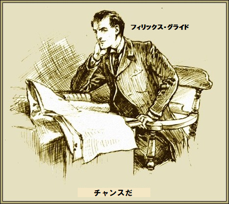
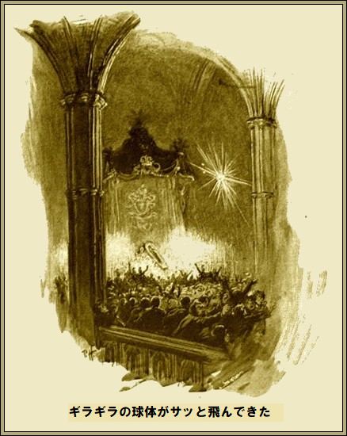
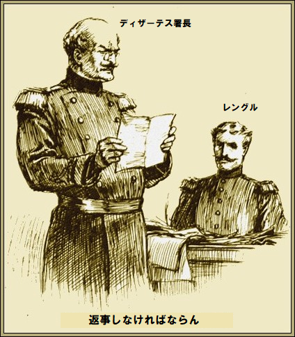
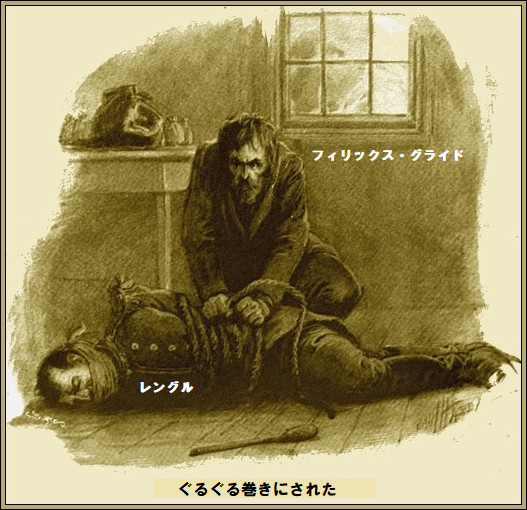

第一章
有名探偵の
大胆な意見とは言え、やはり本当だ。名うての悪党なら早晩見つかると自覚し、それなりの生き方をする。そして結局最後には捕まる。しかしながら、あまた大悪党がいる中で、何かしら尊敬じみた生涯を送ったのも存在するに違いない。そんな人物は小説にとって極めて新鮮だろう。よって、ここにシャーロック・ホームズばりの犯罪者の
こんな有名インテリ悪党が条件ならば、探すのは限りなくゼロになろう。筆者の目的はフィリックス・グライドなる人物について、輝かしい人生に起こった脅威の冒険談を
＊
学生なら皆、レイストリア王国の
これまた誰も知っているが、結果をもたらしたのは四人組の天才たちだ。全盛期、歴史を造るさまは動乱の世紀全部を含めても、かなわない。何年も領土を拡大し続け、ずんずんレイストリア国を強大にしていった。
だが、やがて時が全てをさらう。帝国の建国者達は老い、ペンと剣を置き、とうとう最高権力者ルードフ・シーザーにも死が訪れた。いわゆるレイストリア皇帝だ。
最新情報を乗せた電信が地上のあちこちに飛んだ。
その間、レイストリア国の首都マントゥアでは一カ月間にわたる葬列と儀式が皇帝にふさわしく整えられた。新聞各紙は詳細を厳粛に報じた。八日間の遺体安置は偉大なリュケイオン効果を狙ってのことだ。冷たくなった皇帝の肉体は、うじ虫がわかないように、直ちに防腐処理された。
フィリックス・グライドがこの
グライドは穏やかな青い目をした色白の物静かな男、ちょっと詩人に似てないこともないが、違うのは身なりがきれいで、髪もきちんと整えていることだ。
薄い唇の端に薄笑いを浮かべ、つぶやいた。
「チャンスだ。俺のような真に賢い山師は違う。ここに強奪歴史上、最高に大胆で驚くべき犯罪のヒントが見える。栄光に包まれた一体の亡き骸があり、日夜、

グライドが座って考え込んでいると、やがてロンドンの雑踏が静まった。椅子で眠りこけていたのかもしれない。むっくり起きて、煙草に火をつけ、再び灯りをともした。ベルを鳴らすと召使いがはいってきた。ご主人の命令を待っていた。
「リー君、二、三日留守にする。明朝九時の列車でチャリング・クロスを立つから用意してくれ。戻るときはパリから手紙を出す」
召使いは無言でお辞儀して退出した。グライドはベッドにもぐり、朝まで熟睡した。もう夕暮前には大陸特急に乗って目的地へ
翌晩、客車の窓から暗闇を見れば、紫色のかすかな炎が空から差しているような気がした。まさしく
グライドがつぶやいた。
「一人対五十万人か。旧式銃剣じゃ針穴だ。うまいことに俺は完璧な現地語が話せる」
第二章
これ以上重苦しくて、公開絞首刑以上に
大聖堂の窓という窓は黒い
大聖堂が何千本ものろうそくで淡く照らされている。皇帝の亡き骸が安置された
ごつい体格の衛兵たちが
弔問客は文字通り何千人。静粛で、従順で、涙目であった。よそ者が群衆に潜り込んで観察するのは簡単だ。暗がりがあり、オーク材製の古風な聖職者席も凹んでいる。ここに聖職者たちが隠れ、葬儀の進行を監視している。
儀仗兵の片列、その背後に男が二人忍び込んだ。暗闇にまぎれて見つかる恐れはない。更にいいことに、何千本のろうそくの煙が雲のように渦巻いている。
一人の男の特徴は青白い顔、細身、深い青色の瞳、薄い唇。もう一人は重要でない。単なる共犯者であり、グライドの計画を実行するために必要なだけだ。
グライドに計画立案者は不要だ。自分で考えるからだ。必要な男は命令を忠実に実行し、素早く行動し、蛮勇があることだけ。グライドがそんな
「悪魔の企てですよ」
とフォートがぶつぶつ。
「そうじゃない。超簡単だ。一見すると衆人監視下で皇帝を盗みだすのは難しい。分かるだろ。一番単純な魔法仕掛けはいつも驚くものだ。見方によっちゃ、白木の上に十万ポンドが乗って、おいでおいでしている。人は皇帝の亡き骸とか言うが、この死体こそ高価な売品だよ」
「まず死体を盗むのが先決でしょう」
「その予定だ。やり方か。魔法仕掛けだよ。弔問客の目の前で、皇帝を消してやる。いつかって。群衆が一番ごった返す晩だよ。棺台の後ろに格子窓が見えるだろ。あれが地下室に通じている。地下室の守衛は今晩終わればぐっすり寝るから、ちょっとの間、鍵を失敬してやる。やつはそこまで頭が回らない。大聖堂の建築家は考え抜いて、綿密に計画して、準備して、施工している。図書館で慎重に調べたよ。今この格子窓は祭壇へ温風を送っている。お前に今晩、情報を教えた。おれが地下室のカギを取ってくる。さあて、何をすべきか。命令を復唱してみろ」
「朝十時ごろ一人でここへ来ます。それから天井
「けっこうだ。もう言うことはない。行ってよい」
＊
遺体一般公開六日目の晩、首都マントゥアは国民休日だった。大聖堂が群衆で埋まった。あまりにも混んだので、警察も不安で監視を命じた。依然として儀場は
絶え間ない足音と、
と、やにわにバーンと音がして、バタバタと椅子の倒れる音が轟いた。

その間、暴風が大聖堂に侵入したのか、猛烈な爆風が押し寄せ、大群衆があたふたするさまは、あたかも騎兵が突撃したかのようだった。驚きさめやらぬ間に、またしても爆発が。
ご婦人方の甲高い叫び声が天井に響いた。一斉に群衆は真っ青な顔を西側の大扉に向けた。ただただ欲しかったのは子供の手ほどのわずかな力、今ならそれでドッと動く。
更に大音響が
怒声はマントゥア兵士の
「ものども、扉へ。急ぐな。大したことはない」
厳しい命令の為、群衆が羊みたいにピタッと止まったように見えた。大扉をギーッと開くと、街灯の光が差しこんだ。群衆の黒波がゆっくり進み、惨事は避けられた。衛兵を除き、たちまち大聖堂は空になった。その間、爆発もやんだようだ。
衛兵があわてて祭壇へ駆け寄り、やっとのことでろうそくに火をつけた。奇妙なことに、大理石床に倒れている人はいなかった。
「何が起こったんだ」
と警官がつぶやいた。
衛兵隊長が答えた。
「破壊主義者だ。ばかげた展示、単なる見せ物のせいだ。でも恐ろしい事故だった」
若い副官は無言。
「何事か」
副官がやっと言葉を取り戻し、消え入りそうな声で答えた。
「見てください。皇帝を。悪党どもにやられました。棺台が空っぽです。なんで生きている、やつらは」
ゴマ塩のあごひげ隊長が毒づいた。手の震えでかろうじて動揺が分かった。
「畜生。こんなことになるんだったら、死んだ方がましだ」
第三章
おそらくむなしい試みは、故レイストリア皇帝が消えた大騒動を書くことだろう。ヨーロッパは、ロシア皇帝が暗殺されて以来、久しくこんなにぞくぞくしたことが無かった。連日、新聞各紙は死体強奪の理由を、最新記事や噂で飾った。
当然、容疑は無政府主義者にかかり、大勢逮捕された。だが、くまなく探しても、死体の痕跡さえ見つからなかった。出頭して自白した犯罪者にも恩赦が与えられたが効果無く、莫大な報奨金も無駄だった。
ディザーテス警察署長と部下たちは困惑した。どうしたらいいか全く分からない。三日目に、マントゥア消印の手紙が一通届いた。署名も日付も標題もない。新聞紙の余白を切り取った長い切れ端に文字が書いてある。単に消印が押され、宛名が書かれ、封筒すらない。文字はといえば、小型大文字を貼り付けてあった。次のようだった。
皇帝は安全で無事だ。勇敢で優秀な故人に屈辱を加えないと約束する。遺体返却は単なる金銭問題だ。身代金は十万ポンドの金貨だ。びた一文負けない。断れば、ルードフ・シーザー皇帝は先祖の墓に眠れない。返答の連絡はザイツン紙の広告欄に限定する。『冠』と見出しを付けられたし。
ディザーテス署長はこの妙な手紙を熟考した。悪党が確実に約束を守るのであれば、金を払わねばならないだろうが、常に失敗する可能性はある。
署長が部下のレングルに命じた。
「いずれにしろ返事しなければならん。目的の死体が取り戻せるなら、条件を受けると回答して、金の準備をしろ。すぐ取りかかれ」

その結果、別な手紙が悪党から来た。金の受け渡しが合意を
無駄な手紙を何回もやり取りして、六日遅れで、解決案に合意した。提案が子供じみているとは言わないまでも、とても単純だったので、ディザーテス署長は最終提案を読みながらニヤリ。心の中では、こんなに単純かつ
実際、悪党のグライドは無条件にディザーテス署長の
落ち合う場所はアンダーストラッセ十四番の廃屋 にする。次の金曜日、貴官の使いを同じ通りにある銀行へ行かせ、要求金額を金貨で引き出せ。銀行での受領を見届けるから、馬車で上記十四番地へ運んで来い。扉をノックすれば、制服姿の男が出迎えて、金貨を一階へ運ぶ手伝いをする。この制服男は単なる受取役の無実野郎だ。
実行時間は正確に午後四時とする。受け渡しが確実に行われ、裏切りが無ければ、午後五時の郵便でディザーテス署長あてに亡き皇帝の隠し場所を伝える。遺体を引き取って、元の場所に戻すのに、ある程度時間がかかろう。その間、金貨と貴官の使いは十四番地に留まる。夜七時に退去する。それ以前に退去するときはその時間を知らせる。以上。
実行時間は正確に午後四時とする。受け渡しが確実に行われ、裏切りが無ければ、午後五時の郵便でディザーテス署長あてに亡き皇帝の隠し場所を伝える。遺体を引き取って、元の場所に戻すのに、ある程度時間がかかろう。その間、金貨と貴官の使いは十四番地に留まる。夜七時に退去する。それ以前に退去するときはその時間を知らせる。以上。
ディザーテス署長はこれを読んでほくそ笑んだ。ザイツン紙に本件全てを忠実に実行する
「レングル君、やるぞ。金貨を調達して、十四番地へ運んでくれ。本物の金貨だぞ。要求通り午後七時までそこにいろ。その間、家のまわりに警察の非常線を張れ。時間が来たら現場に踏み込んで悪党を取り押さえろ。もちろん、皇帝の死体を発見してからだ。あとのことはキミの有能な腕にゆだねる」
「署長、了解しました」
こうレングルが応えると、ディザーテス署長は安心して夕食に出かけた。
＊
多難な金曜日の午後一時、グライドが自室に座ってフォートを待っていた。目の前のテーブルには、消印付き封書が山積みされ、シャンパンが一本乗っていた。ほぼ満杯で、特許栓が差してある。
二、三分してフォートがはいってきた。
「フォート君、よく来た。とにかく、もう言うことはない。キミのやるべきことは打ち合わせ通りだ。午後五時きっかり十四番地へ行って、銀行からの使いを待て。箱を開けさせて、金貨を見て、本物か確認せよ。午後七時ちょっと前に俺も行くから」
「使いが来なかったら？」
とフォートが尋ねた。
「その場合は裏切られたと思え。当然、現場で自分の身の安全を考えろ。窓から俺に合図を送れば、俺が動いて助け出してやる。いいか、午後五時十五分前にはこの隠れ家で待機しているんだぞ」
フォートがうなずいた。ちょっと戸惑ってはいるが、何はさておき親分に忠実だ。親分のグライドには何でも従う。
「おっしゃる通り致します」
「よろしい。それでは一緒に乾杯しよう。それから別れよう。俺にはやることがたくさんあるから」
グライドがレバーを押すと、グラス一杯に泡があふれた。二個目のグラスに注ぐとき、人差し指で星印を隠した。二番目のグラスをフォートに渡し、自分は最初のグラスを一口含んだ。
「さてこれでよし。行ってよい」
約束の午後四時に、レングル警官が金貨を持って十四番地へやってきた。妙なことに、フォートに告げた時刻の午後五時よりちょうど一時間前だった。ベルを押すと、男が一人出てきて、重荷を後ろの部屋に運び込む手伝いをして、お辞儀して退出した。
玄関で待っていたこの男こそグライドだった。変装を見破れる者などいない。グライドが言った。
「キミは行ってよろしい。俺の友人は到着済みだ。これはキミへのお礼の金貨だ」
レングル警官が扉を閉めるが早いか、グライドが部屋に密かに侵入。そこでレングル警官は待機している。レングル警官の背後にグライド。グライドの手には武器が。いわゆる
一発ぶっ放すとレングル警官の右耳たぶに当たり、その場に子牛のようにドタンと倒れた。言葉を発する間もなく、口をふさがれ、文字通りぐるぐる巻きにされ、地階へ転がり落とされた。

次の四十五分間、グライドは忙しかった。金貨を多数の小箱に移さねばならない。箱は「自転車軸受」と書かれ、送り先はロンドン、フェンチャーチ通り沿いの家だ。
裏側は、薄汚い狭い通りに面し、工場のめくら壁になっている。グライドが最後の小箱を通りに出した時、荷馬車がガタガタやってきた。
「こっちだ。遅いぞ。箱を積め。俺も同じ所へ行くので、駅まで乗せてくれ」
御者はこの労働者を乗せることを拒否しなかった。こうしてまさにお宝を客車で急送しているさなか、数分後にフォートが十四番地に着いたとき、グライドは高価な金貨を積んだ列車に乗って、目的地へ進行中であった。労務者風の男は三等客車の隅にくるまっていた。この男が今ヨーロッパで一番破廉恥な犯罪を行った張本人だとは誰も知るまい。
一方のフォートは辛抱強く待った。どこかで時計が午後七時を打った。その瞬間、正面扉が開き、足音がバタバタ。フォートは即座に警戒した。この無鉄砲な悪党が今まで裏切られたことは一時たりともなかったのに。
自分の命は守らねばならない。歯を食いしばり、取り囲んだ警官に向かった。武器はない。勇気を奮い立たせ、破れかぶれで飛びかかった。直後の暴れ戦う姿は虎の勢いだ。
すると突然、力が無くなったように見え、ガクッと仰向けに倒れ、警官に捕まった。顔がうっすら青ざめ、口の両側が
何が起こったか分からないうち、ディザーテス署長がハアハア走ってきた。大喜びで、両目が勝利に輝いている。
「悪党が教えた。皇帝は大聖堂の地下室の石棺に隠されていた。長いこと死体を探した。悪党どもは、棺台の背後にある格子窓から盗んだ。犯人と金貨は捕まえたか」
警官の一人が新事態を説明した。探索したものの、金貨は見つからず、ただレングル警官が地下室で惨めにうめきながら事件を呪うばかりであった。
こうして、金貨は消え、こんにちまで隠し場所は謎に包まれている。てっきり悪党の頭目を
＊
グライドはたっぷり時間をかけて、事件の解説記事をロンドンで愉快そうに読んだ。金は分捕ったし、危険は無傷で切り抜けた。我が身を守るために仲間を冷酷、冷血に裏切った。シャンパンに毒を盛り、二枚舌で確実に保険をかけた。
新聞を脇に放り投げ投げて、悪の帝王がつぶやいた。
「結局、超簡単だった。ゼラチン爆弾もうまく行った。落下衝撃で爆発する。巧妙かつ無害だ。サツよ。俺なら大英銀行でも奪えるし、警視庁に追わせるぜ。いつかやってやる。そのあと引退してランでも育て、ブルジョア神のご機嫌を
了